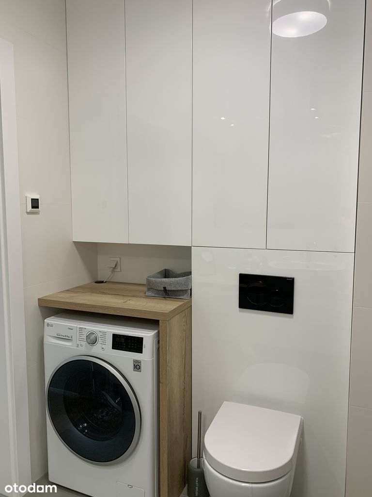
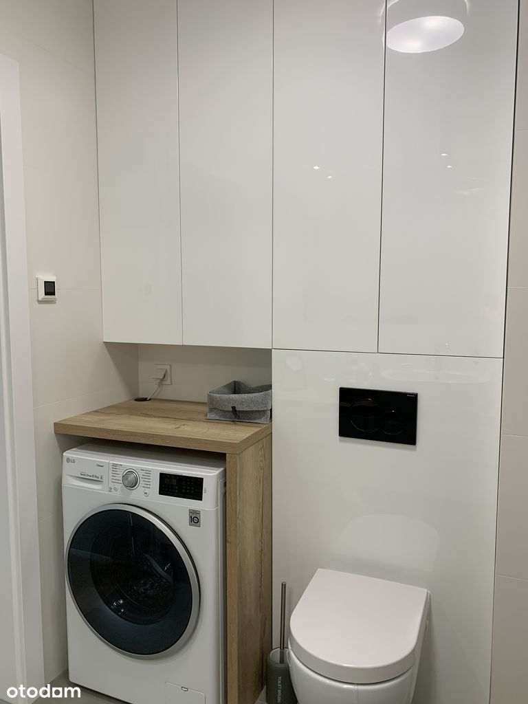

Oferta bezpośrednia od właściciela - kupujący nie płaci prowizji.
Szanowni Zainteresowani:
Przed kontaktem bardzo uprzejmie zachęcam do obejrzenia:
i) spaceru 3D,
ii) rzutu lokalu z dokładnymi wymiarami
iii) oraz przeczytaniu opisu
Kluczowe Informacje
Mieszkanie i Budynek
Mieszkanie jest zlokalizowane na 1 piętrze z 3 z budynku z windami oraz przeszklonymi klatkami schodowymi. Mieszkanie:[ proszę najlepiej zobaczyć rzut mieszkania z wymiarami ]
Budynek zbudowany przez Dom Development jest bardzo wysokiej jakości i charakteryzuje się dużą trwałością. Wokół budynku wkomponowane jest jest bardzo dużo bujnej roślinności (trawniki, krzewy, drzewa). Ogólnodostępna wózkownia w zamykanym pomieszczeniu na poziomie -1, od razu obok windy.
Wyposażenie Mieszkania i Standard
Kuchnia:
Meble wykonane na zamówieniowe z płyt Egger i okucia Blum, Fronty białe na wysoki połysk, blat dąb Sonoma, Lodówka wolnostojąca, na podłodze glazura 60.60 jasno szary beton mat by Atlas Concorde, AGD: całość SIEMENS oprócz lodówki.
Łazienki:
Glazura Atlas Concorde – ściany 40.80 biały ciepły mat, podłoga 60.60 jasno szary beton mat
Spłuki GEBERIT/ Misy WC i Wanna ROCA / Umywalki KERASAN FLO 60X42
Prysznic Odpływ Liniowy
Meble łazienkowe na zamówienie EGGER, biały połysk i blat Dąd Sonoma
Elektryczne ogrzewanie podłogowe.
Podłogi
W pokojach i holu deski drewniane trójwarstwowe / woskowane - jasny dąb selekt natural
Parapety wewnętrzne wykonane są z konglomeratu (jasny beż)
Informacje Prawne i Warunki Transakcji
Osiedle
Osiedle Wilno cechuje niska 3 piętrowa zabudowa oraz jasne elewacje wzbogacone o ciekawe instalacje artystyczne. Przestrzeń wspólną wypełniają ulice, place miejskie, skwery, alejki oraz fontanny. Atrakcyjnie zaaranżowane zielone dziedzińce w połączeniu z bezpiecznymi placami zabaw zachęcą dzieci i dorosłych do aktywności na świeżym powietrzu.
Osiedle Wilno spełnia wymogi Zielonej Karty Inwestycji z uwagi na bogaty pakiet elementów zapewniających komfort życia mieszkańców oraz wspierających ochronę środowiska.
Lokalizacja
Osiedle Wilno to wieloetapowa inwestycja mieszkaniowa, położona w dzielnicy Targówek. Wygodna komunikacja z centrum, w tym własna stacja kolejowa, liczne miejsca do rekreacji oraz bogata oferta handlowo-usługowa sprawiają, że jest to w pełni funkcjonalna przestrzeń do życia.
Komunikacja do Centrum
Budynek Pohulanka 3 znajduje się ok 100m od stacji kolejowej Warszawa Zacisze Wilno. Skąd w godzinach szczytu co 10m odjeżdżają pociągi do stacji Warszawa Wileńska, a tam można się przesiać na linię Metra M2.
Informacja
Niniejsze ogłoszenie jest wyłącznie informacją i nie stanowi oferty w rozumieniu art. 66 § 1 Kodeksu Cywilnego. Załączony plan mieszkania jest poglądowy.


 
